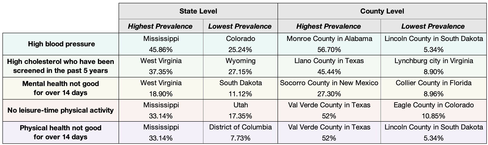
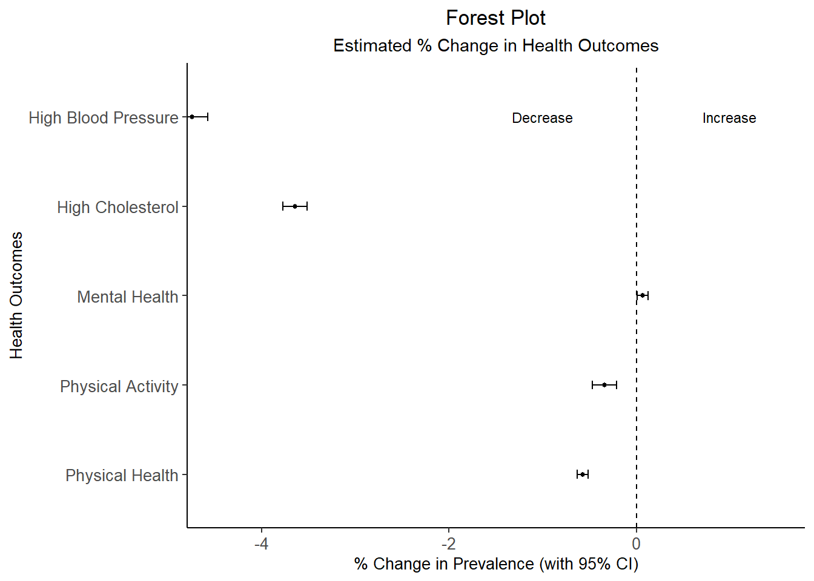

Here are the foundings from exploratory data analysis, statistical
analysis, spatial clustering analysis, and dashboard.
The main purpose of EDA is to explore the overall demographics,
walkability and health outcome across geographical regions in the United
States.
- The US mean walkability score is 9.54, which is below average
walkable according to the National Walkability Index score ranging from
1 to 20.
- The highest average walkability score is from the District of
Columbia and the lowest average walkability score is from Puerto
Rico.
- Here is a table showing the health outcome prevalence on the
state-level and county-level.

Here, we explored how walkability is correlated with health outcomes
at the national level.
We utilized beta regression to model the relationship between health
outcomes with the dichotomized walkability variable, controlling for
sociodemographic variables of prevalence of age 18+, males, Black
individuals, and median income.
We found that, more walkable places have the following difference in
prevalence for a particular health outcome compared to less walkable
places:
- 1.690% increase in physical activity
- 0.568% increase in good mental health
- 0.396% increase in good physical health
- 2.133% decrease in high cholesterol
- 2.359% decrease in high blood pressure
Therefore, we concluded that:
- Increase in walkability is associated with decreased prevalence of
poor health outcomes, which is expected.
- However, an increase in walkability is associated with an increase
for prevalence of poor mental health, but this could be due to
unaccounted for confounding from density of space and urbanicity that
comes with more walkable spaces.
Here is a forest plot to more visually display the difference in
prevalence for our various health outcomes compared to less walkable
places:

In this section, we explored the National Walkability Index at the
county-level across the United States. Also, we will take a closer look
at the walkability in New York City and conduct exploratory spatial data
analysis.
Choropleth Walkability Map
In our interactive map, we observed that most of the cities in the US
have a relatively lower walkability index while most major metropolitan
areas have a higher walkability index.
Compared to the EPA’s
National Walkability Map, our interactive map provides additional
information about the percentage of selective health outcomes. This
interactive display of both walkability scores and various health
outcomes across the US can be helpful for various audiences who might
want to look at the spatial distribution of both simultaneously.
NYC Cluster Spatial Analysis
We map the different clustering of walkability in NYC using Queen’s
first order contiguity and local Moran’s I.
Considerting the hot spots (i.e., High-High) and the cold spots
(i.e., Low-Low), we found that:
- In Manhattan, there are several High-High clusterings (i.e., census
tracts that with walkability that are surrounded by census tracts with a
high walkability index) in the Midtown and SOHO area.
- Some parts of Queens, such as Flushing and Forest Hills, also
indicates a High-High clustering.
- Parts of the Bronx shows the Low-Low clustering, where census tracts
that are low in walkability are surrounded by census tracts with low
walkability index.
- The Low-Low clustering in Brooklyn, on the other hand, might be due
to the location of the JFK airport.
This suggests that, the High-High neighborhoods are doing a good job
in building a walkable environment and the Low-Low areas will benefit a
lot by improving built environment infrastructure to make the community
more walkable for all.
To get a better understanding of the walkability, demographics and
health outcomes, we created a dashboard looking at our variables of
interest within counties of New York State.
Here are some highlights:
- All health outcomes (poor physical health, poor mental health, no
leisure physical activity, high cholesterol and high blood pressure) are
rather equally distributed across New York State counties,and are not
related to walkability index.
- Counties with median household income exceeding $100,000 have higher
walkability indices.
- One expalanation is that it could indicate that more walkable
counties are more desirable, leading to higher property prices, thus
only those with higher incomes can afford to live there.
You can learn more about the detailed process of doing this project
on the Project Report page.